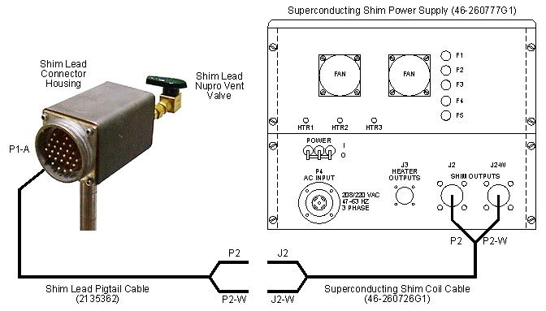
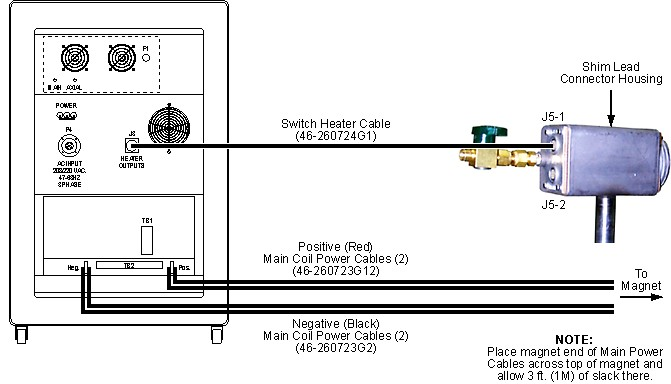
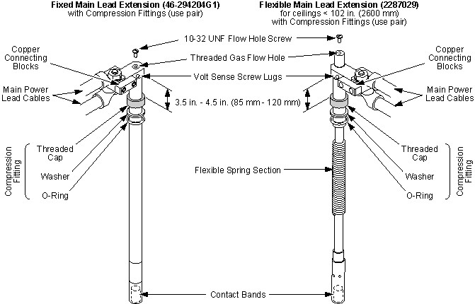
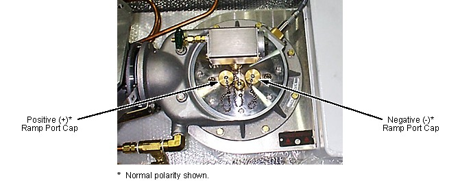
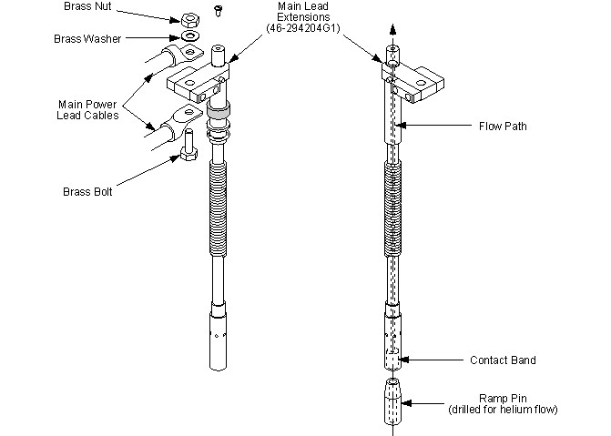
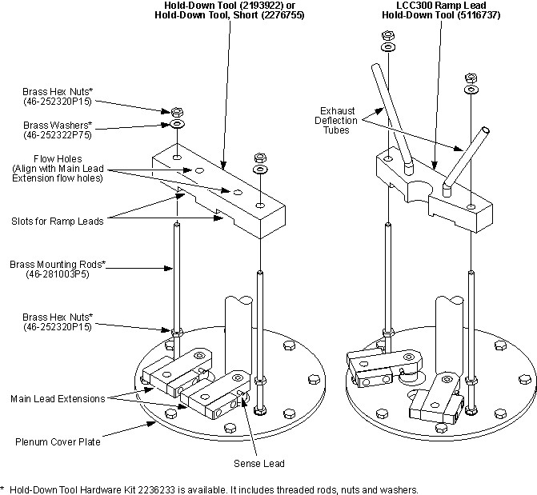

Operating Documentation
Direction 5440000, Rev# 5
Signa HDxt Service Methods
Module Version 3.0, Version Date 2/9/10
Operating Documentation |
| Required Persons | Preliminary Reqs | Procedure | Finalization |
|---|---|---|---|
| 2 | Included in 'Procedure' | 1 hour | Included in 'Procedure' |
This section covers electrical connections required to be made before performing the ramping or rampdown procedures (Ramping Magnet to Field and Magnet Rampdown to Zero Field, respectively) and the shimming procedure (Shimming).
| NOTE: |
|
| Item | Qty | Effectivity | Part# | Manufacturer | |
|---|---|---|---|---|---|
| Gloves (electrically insulating); one pair per person | 1 | - | - | - | |
| Safety Glasses; one pair per person | 1 | - | - | - | |
| Nonferrous Safety Shoes; one pair per person | 1 | - | - | - | |
| Brass Master Padlock with Brass Shackle | 1 | - | 46-194427P320 | - | |
| Brass Master Transition Padlock | 1 | - | 2387081 | - | |
| Black & White on Red Lockout Tag, package of 25 | 1 | - | 46-194427P322 | - | |
| Transition LOTO Tag | 1 | - | 46-194427P313 | - | |
| Line Cord Plug Cover, Plugs ≤ 3 in. (76 mm) wide x ≤ 5.875 in. (149 mm) long, Cords ≤ 1.25 in. (31 mm) dia. | 1 | - | 46-194427P321 | - | |
| 750 Amp TCR 7.5T750 Main Power Supply 46-260776G3 or 1000 Amp ESS 7.5-1000-2-D-1236 Main Power Supply 46-260776G4 | 1 | - | 46-260776G3 or 46-260776G4 | - | |
| Superconducting Shim Coil Power Supply | 1 | - | 46-260777G3 | - | |
| Fixed Main Lead Extension 46-294204G1 or Flexible Main Lead Extension 2287029 (for low ceiling height sites) | 1 | - | 46-294204G1 or 2287029 | - | |
| Hold-Down Tool 2193922; Hold-Down Tool, Short 2276755 (for low ceiling height sites); or LCC300 Ramp Lead Hold-Down Tool 5116737 (only for use when LHe topoff is planned immediately after parking the magnet; included in LCC300 Passive Shimming Tools Kit 2386029) | 1 | - | 2193922, 2276755 or 5116737 | - | |
| Retractable Shim Lead Assembly 2173354 or Retractable Shim Lead Assembly, Short 2285073 (for low ceiling height sites) | 1 | - | 2173354 or 2285073 | - | |
| 750 Amp Ramp Cable Kit 2135435 or 1000 Amp Ramp Cable Kit w/ Ground 2353394 | 1 | - | 2135435 or 2353394 | - | |
| Field Shim Cable Kit (if not already ordered with the magnet) | 1 | - | 2135558 | - | |
| Digital Voltmeter (DVM) | 1 | - | - | - | |
| Titanium Tool Kit, Basic Set 5113258, Titanium Tool Kit, Installation Set 5112581 or other non-ferromagnetic tools (magnets with magnetic fields > 1.5T); one kit | 1 | - | 5113258 or 5112581 | - | |
| HDx Service Platform (can use Universal Service Ladder/Platform 2319156 if service space ≥ 30 inches (762 mm)) | 1 | - | 5155291 (or 2319156) | - | |
| Service Methods documentation for the magnet/enclosures (available through the Common Document Library at gehealthcare.com or through your local GE Healthcare Service Representative) | 1 | - | - | - | |
| Item | Qty | Effectivity | Part# | Manufacturer |
|---|---|---|---|---|
| Cable Ty-Wraps | 6 | - | - | - |
| Bronze Wool; package | 1 | - | 46-318068P1 | - |
| ScotchBrite© Pads (or equivalent) | 1 | - | - | - |
| Item | Qty | Effectivity | Part# | Manufacturer | |
|---|---|---|---|---|---|
| Main Lead Extension Contact Band (included in Magnet Ramping Equipment Kit 46-260703G5) | 2 | - | 46-281256P1 | - | |
| ||||
| Potential Fatal Injury! | ||||
| Make sure to review and fully understand all superconducting magnet portions of 2301164PRE, MR Magnet ― Safety Requirements before starting this Connections for Ramping and Shimming procedure. |
| ||||
| Potential Fatal Injury! | ||||
| Make sure to fully comply with all required items to make ramping and shimming Connections in the 'Magnet & Cryogen Service Safety Requirements' subsection of 2301164PRE, MR Magnet ― Safety Requirements before and while performing this Connections for Ramping and Shimming procedure. |
| ||||
| Potential Fatal Injury! | ||||
| Have all “Work Assistants” or “Work Observers” comply with the 'Buddy System Requirements & Certification' subsection of 2301164PRE, MR Magnet ― Safety Requirements before starting this Connections for Ramping and Shimming procedure. |
| ||||
| Electrical Shock Hazard | ||||
| Contact with connectors leading an energized power supply to can cause electrical shock. | ||||
| Always wear appropriate Personal Protective Equipment (PPE) ― Electrically insulated gloves (with NO holes/tears), nonferrous safety shoes and safety glasses/goggles ― while making electrical Connections for Ramping/shimming. |
| ||||
| Electrical Shock Hazard | ||||
| Contact with connectors leading to an energized power supply can cause electrical shock. | ||||
| Follow lockout/tagout procedures while making electrical connections to any power supply. See OSHA Lockout-Tagout. |
| ||||
| Read, understand and apply all safety requirements stated in 2301164PRE, MR Magnet ― Safety Requirements applicable to this Connections for Ramping and Shimming procedure both before and while performing this Connections for Ramping and Shimming procedure. | ||||
| Condition | Reference | Effectivity |
|---|---|---|
Make sure the area is secure and that ALL required Warning Signs are posted to meet the safety requirements stated in 2301164PRE, MR Magnet ― Safety Requirements before starting this Connections for Ramping and Shimming procedure. | - | |
Perform the Shim Lead Connector and Vertical Penetration Deicing subsection of Ice Removal to make sure the Shim Lead connector plug (P100) is functional prior to making power supply connections. Remove ice as required. | - | |
The removal of some magnet enclosure components may be required to complete the Connections for Ramping and Shimming procedure. Refer to Upper and Side Enclosure Removal (Wide Open enclosures) or to Introduction to HDe & HDx Enclosuresand the appropriate Service Methods documentation (available through the Common Document Library at gehealthcare.com or through you local GE Healthcare Service Representative) before continuing with the Connections for Ramping and Shimming procedure if cover removal is required. | - | |
(continued) | - |
| ||||
| ||||
Engage the Shim Leads in conformance with Shim Lead Engagement and Disengagement.
| ||||
| Electrical Shock Hazard | ||||
| Contact with connectors leading to an energized power supply can cause electrical shock. | ||||
| Follow lockout/tagout procedures while making electrical connections to any power supply. |
Disconnect and lockout/tagout input power to the Shim Coil Power Supply. Verify that no voltage is present by using a DVM or equivalent measuring device.
Connect electrical cabling to the Shim Coil Power Supply as shown in Illustration 1.
Illustration 1: Shim Power Supply Connections

Remove lock-out/tag-out from the Shim Coil Power Supply.
| ||||
| Electrical Shock Hazard | ||||
| Contact with connectors leading to an energized power supply can cause electrical shock. | ||||
| Follow lockout/tagout procedures while making electrical connections to any power supply. |
| ||||
| Potential Cold Burn or Asphyxiation Hazard | ||||
| Internal cryostat pressure build-up to > 5.25 psig will open 5.25 psig relief valve. | ||||
Before removing either Ramp or Fill Port Caps or loosening
any component resulting in the release of cryogen pressure:
|
| NOTE: | If the site has Magnet Monitor proprietary software, connect to Magnet Monitor and turn off the alarm for vessel pressure. Then turn the vessel pressure control to a high value of .5 psig and a low value of .4 psig. |
Disconnect and lockout/tagout input power to the Main Coil Power Supply. Verify that no voltage is present by using a DVM or equivalent measuring device.
Connect electrical cabling to the Main Coil Power Supply as shown in Illustration 2 or Illustration 3.
| NOTE: | Clean all connections on the Main Leads and Main Lead Extensions to prevent high resistance contacts and minimize voltage drops. Brass wool or scouring pads can be used to clean connections. |
| NOTE: | Make sure all nuts are tightened sufficiently to prevent a high resistance contact. Connect red cables to the positive (+) buss bar and black cables to the negative (-) buss bar. Two red and two black cables are connected in parallel to the buss bars for a 750 amp power supply, and three red and three black cables for a 1,000 amp power supply. Make sure the cable lugs and/or exposed wire from the Ramp Cables are not touching the case of the Main Coil Power Supply. |
| NOTE: | Either heater connector J5-1 or J5-2 can be used to turn on the heater(s). See Illustration 2 or Illustration 3. Do not connect two heater cables at the same time. |
Illustration 2: Magnet Power Supply Connections, 750 Amp Power Supply

Illustration 3: Magnet Power Supply Connections, 1,000 Amp Power Supply

| ||||
| The Main Lead Extensions used for the LCC magnet are the same as those used for other active shield magnets (SIV, SV and SX) but different than those used for non-active shield magnets (SII, SIII and Max). The LCC Main Lead Extensions have a helium flow hole seen from the Contact Band end of each Extension and are shorter than SIII Ramp Leads. | ||||
| ||||
| Make sure Main Lead Extensions 46-294204G1 are used for the Connections for Ramping and Shimming procedure when the ceiling height is > 103 inches (2616 mm). Use Flexible Main Lead Extensions 2287029 and the Ramp Lead Hold-Down Tool (2276755) in low ceiling height conditions. See Illustration 4. | ||||
Replace the Contact Bands on the Main Lead Extensions in conformance with Main Lead Extension Contact Band Replacement before starting the ramp procedure. Make sure the gas flow holes are not blocked.
| NOTE: | Use a new set of Contact Bands for each ramp performed. |
Illustration 4: Main Lead Extensions

| ||||
| Potential Fatal Injury! | ||||
| Make sure to review and fully understand all superconducting magnet portions of 2301164PRE, MR Magnet ― Safety Requirements before performing the following step. |
| ||||
| Asphyxiation Hazard! | ||||
| Procedure generates odorless, colorless helium gas that displaces oxygen in the air. | ||||
| Make sure magnet room vent exhaust fan is on before performing the following step. |
| ||||
| Potential Magnet Quench! | ||||
| Improper engagement/disengagement of the Main Lead Extensions with the Main Lead Pins can cause a ramped magnet to quench. | ||||
| Insert Main Lead Extensions one at a time and, if the magnet is at field, allow them to cool sufficiently (a fog or water vapor forms around the Lead Extensions) before they contact the Main Lead Pins. |
| ||||
| Electrical Shock Hazard! | ||||
| Touching both Main Lead Extensions at the same time or allowing them to contact each other while the magnet is at field will result in a rapid discharge through their contact points if the Switch Heater is activated or circuit resistance develops at that moment. | ||||
| Do not Touch both Main Lead Extensions at the same time. Do not allow the Main Lead Extensions to contact each other. |
| ||||
| Electrical Shock Hazard! | ||||
| Do not allow exposed body areas to come in contact with the cryostat or plumbing while inserting or extracting the Main Lead Extensions. |
| ||||
| Potential Cold Burn Hazard | ||||
| contact with cold objects is possible during this Connections for Ramping and Shimming procedure. | ||||
| Wear nonabsorbent leather gloves with no holes or tears during insertion or extraction of the Main Lead Extensions. |
| ||||
| Potential Magnet Quench! | ||||
| miswiring can result in a magnet quench. | ||||
| To prevent the possibility of miswiring and a resultant quench during future ramping of the magnet, record connection polarities in Magnet Ramping and Parking Current Log. |
| ||||
| Potential Magnet Quench | ||||
| Contact between the brass bolts securing the power cables to the Main Lead Extensions 46-294204G1 and the Fill Port (V1) Cap can quench the magnet. | ||||
| Make sure the brass bolts are installed correctly. |
When using Fixed Main Lead Extensions 46-294204G1 (only), connect the other end of the Main Power Cables to the Main Lead Extensions with the 1 inch (25.4 mm) brass bolts as shown in Illustration 5. Secure the bolts with the brass nuts and brass washers provided. Tighten the connections sufficiently to provide a good electrical connection.
| NOTE: | Only use brass washers when connecting Main Leads to the Main Lead Extensions to keep voltage drop to a minimum. |
| NOTE: | Main Lead connections for Flexible Main Lead Extensions 2287029 are made after lead insertion in Step 12. |
Illustration 5: Hardware Mounting on Fixed Main Lead Extensions 46-294204G1

Install the 10-32UNF gas flow hole screws into the gas flow holes on each Main Lead Extension. See Illustration 5.
Open the vent valve V2 (Illustration 6); turn off the proprietary pressure control feature in Magnet Monitor, if applicable; and vent to 0.2 psig. Then close vent valve V2.
Illustration 6: Helium Vent Plumbing

Remove the Positive (+) Ramp Port Cap located on the magnet's vertical stack. See Illustration 7. Make sure the gasket inside the cap does not get lost.
Illustration 7: Ramp Lead Port Polarities

| ||||
| If using Flexible Main Lead Extensions 2287029, bend the lead extension to a 45° angle in order to clear the ceiling when inserting the lead in the following step. Allow the flexible lead to straighten out and pre-cool before full insertion. The lead must be in its staight position to prevent cooling exhaust helium from escaping the coils. | ||||
Quickly insert the Positive (red cables attached) Main Lead Extension less than halfway into the open receptacle.
Quickly screw the Main Lead Extension compression nut onto the ramp port to prevent icing of the threads.
Loosely screw the compression nut onto the Ramp Lead Port. See Illustration 7 for correct connection polarities.
When using Flexible Main Lead Extensions 2287029 (only), connect the other end of the Main Power Cables to the Main Lead Extensions with the 1 inch (25.4 mm) brass bolts as shown in Illustration 8. Secure the bolts with the brass nuts and brass washers provided. Tighten the connections sufficiently to provide a good electrical connection.
| NOTE: | Only use brass washers when connecting Main Leads to the Main Lead Extensions to keep voltage drop to a minimum. |
Illustration 8: Hardware Mounting on Flexible Main Lead Extensions 2287029

Connect the Voltage Sense Leads to the Main Lead Extension's Voltage Sense Screw Lugs (shown in Illustration 4) to allow for correct placement of the Ramp Lead Hold-Down Tool. Terminate the other end of the Voltage Sense Leads to a DVM or VOM placed near the Main Coil Power Supply.
Remove the flow hole screws. See Illustration 4.
| ||||
| Potential Magnet Quench! | ||||
| Improper engagement/disengagement of the Main Lead Extensions with the Main Lead Pins can cause a ramped magnet to quench. | ||||
| if the magnet is at field, allow the Main Lead Extensions to cool sufficiently (a fog or water vapor forms around the Lead Extensions) before they contact the Main Lead Pins. |
| ||||
| Make sure gas flow holes in the Main Lead Extension are not blocked and that helium gas is exiting the holes. | ||||
When the Main Lead Extensions are sufficiently cooled, loosen the compression fittings and fully engage the Main Lead Extensions. Loosely screw the compression nut onto the Ramp Lead Ports.
| NOTE: | The Main Lead Extensions will depress approximately 1 inch (25 mm) from the point of contact to the fully engaged position. A firm resistance will be felt when fully engaged. Do not rotate the Main Lead Extensions excessively when in the engaged position as internal contact wear could result. |
| NOTE: | When using LCC300 Ramp Lead Hold-Down Tool 5116737 orient the Main Lead Extensions 30° right and left of vertical. See Illustration 9. |
| ||||
| Potential Magnet Quench | ||||
| Excess power cable motion during ramping may disrupt contact between the Main Lead Extensions and the Main Lead Contact Pins. This can cause the magnet to quench. | ||||
| Secure the Main Power Cables using Ty-Wraps and the Main Lead Extensions using a Ramp Lead Hold-Down Tool. |
| ||||
| After installing the Main Leads, take the following steps to prevent power cable motion disrupting Main Lead Extension contact. | ||||
After installing the Main Leads, secure the Main Power Cables using Ty-Wraps (a field-supplied item). The cables should be secured to each other and to convenient fixed points, such as the shroud rails, to prevent their movement.
| NOTE: | Using a Ramp Lead Hold-Down Tool is required to minimize motion of the Main Leads and aid in getting good contact resistance. |
Install a Ramp Lead Hold-Down Tool (2193922 with Fixed Main Lead Extensions, 2276755 with Flexible Main Lead Extensions or LCC300 Ramp Lead Hold-Down Tool 5116737 when LHe topoff is planned immediately after magnet is parked during ramp up/down):
Make sure the heads of the Main Lead Extensions are oriented to match the grooves for them in the under side of the hold-down tool being used.
Screw the mounting studs of the Hold-Down Tool into the mounting holes welded onto the Main Lead Base Plate. See Illustration 9.
Illustration 9: Hold-Down Tool Installation

Install the Hold-Down Tool onto the mounting bolts. Make sure that the Main Leads fit into the slots on the plate. See Illustration 9.
| ||||
| If using LCC300 Ramp Lead Hold-Down Tool 5116737, make sure the copper tubes will deflect away from the Fill Port the helium gas escaping the Main Lead Extension flow holes. | ||||
Tighten the Nuts on top of the Hold-Down Tool to lock the tool firmly in place and prevent Main Lead motion. While tightening the nuts, adjust the leveling screw to keep the tool level. See Illustration 9.
| ||||
| Potential Magnet Quench | ||||
| Blocked Main Lead Extension vent holes can allow the voltage between the Main Lead Extensions and the Main Lead Contact Pins to drop. This can cause the magnet to quench. | ||||
| Make sure the vent holes in the Main Lead Extensions are not blocked. |
Verify that the vent holes in the Main Lead Extensions are not blocked.
No finalization steps.